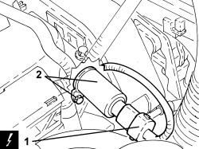

1056B37 INLET OR EXHAUST TIMING PHASE TRANSFORMER SOLENOID - R.R.
- Path
- Procedures > 10 ENGINE > 1056 PETROL INJECTION SYSTEM > 1056B MULTI-POINT INJECTION SYSTEM (MPI) > 1056B37 INLET OR EXHAUST TIMING PHASE TRANSFORMER SOLENOID - R.R.
- Kind
- repair procedure (removal / refitting; the operation number is the code)
- Applies to
- engines: 1.8; all production periods
- Interactive page
- https://sloeber94.github.io/elrnDB-fCrm/en/#/194003027
Applies to: engines: 1.8; all production periods
 Removing
Removing
 Refitting
Refitting1. Disconnect the electrical connection for the phase transformer solenoid, inlet side.
Description | Connector | |
|---|---|---|
1 | Inlet side phase transformer solenoid valve |
2. Undo the bolt and remove the phase transformer solenoid, inlet side.

Applies to: engines: 1.8; all production periods
Refitting
Removing- Place the inlet side phase transformer solenoid in its housing and tighten the bolt.
- Connect the electrical connection for the phase transformer solenoid, inlet side.